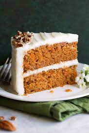

Carrot Cake

Description
A moist and flavorful carrot cake with cream cheese frosting.
Ingredients
6 cups of grated carrots
1 cup of brown sugar
1 cup of raisins
4 eggs
1 1/2 cups of white sugar
1 cup of vegetables oil
2 teaspoons of vanilla extract
1 cup of crushed pineapple, drained
3 cups all-purpose flour
4 teaspoons ground cinnamon
1 1/2 teaspoons baking soda
1 teaspoon salt
1 cup chopped walnuts
Steps
Step 1: Gather all ingrediens
Step 2: Combine grated carrots and brown sugar ini a medium bowl. Let sit for 1 hour, then stir in raisins.
Step 3: Preheat the oven to 350 degrees F (175 degrees C). Grease and flour two 10-inch round cake pans. Beat eggs in a large bowl until light.
Step 4: Gradually beat in white sugar, oil, and vanilla. Stir in pineapple.
Step 5: Combine flour, cinnamon, baking soda, and salt in a separate bowl, then stir into egg mixture until absorbed.
Step 6: Stir in carrot mixture and walnuts. Pour evenely into the prepared pans.
Step 7: Bake in the preheated oven until an inserted toothpick comes out clean, 45 to 50 minutes.
Step 8: Cool for 10 minutes before removing cake layers from the pans; let cool completely.